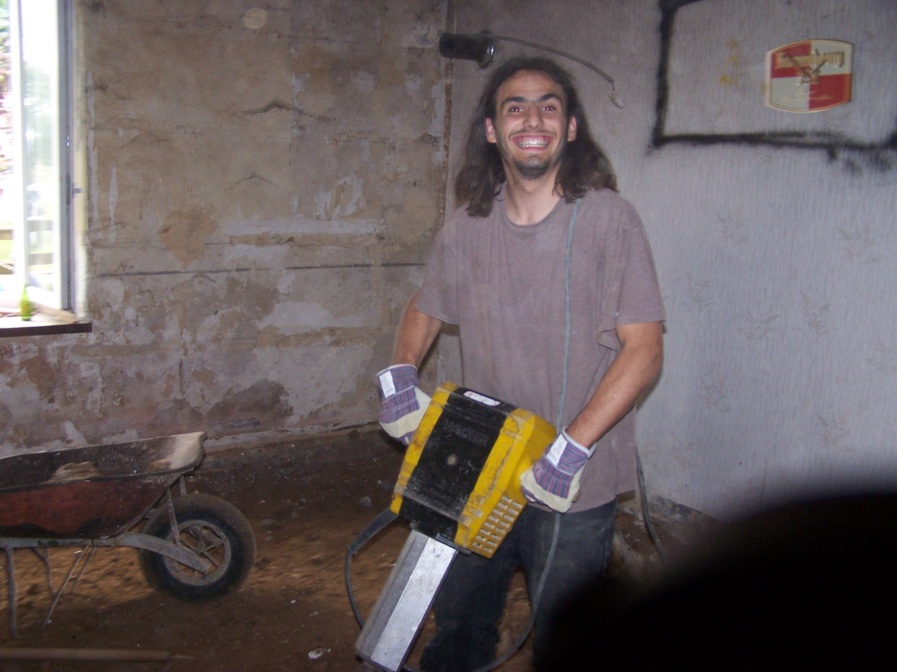
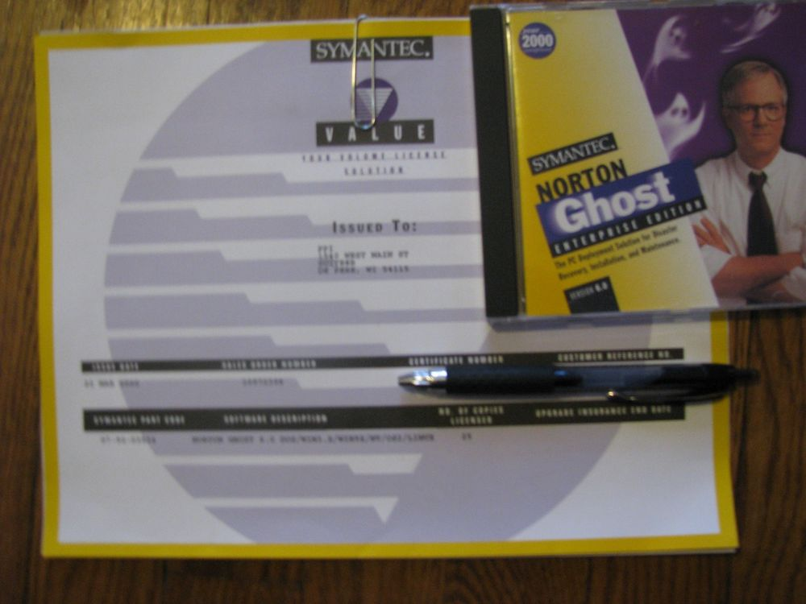
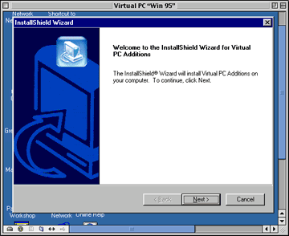

Hands-on your delivery pipeline
Jean-Charles Legras - Loïc Ortola
What's the plan?
- Introduction
- World-War-Web: Dev vs Ops
- A new hope
- The dream-team
- Ops Tools
- Help! Ansible & Docker
- Feedback: Real-life Use-case
- Hands-on. The dev strikes back
Introduction
World-War-Web: Dev vs Ops
Click hereWorld-War-Web: Dev vs Ops
Two separate worlds
Devs:
Develop new features: Follow business requirements
Ops:
Maintain availability:
Keep the software up and running.
Behind the eyes of the Ops
Ops are the Guardians of the temple.Ops are the high-voltige firefighters who save your ass
Behind the eyes of the Ops
Devs never RTFM. They just don't care
Devs are undisciplined and love blowing up stuff

Behind the eyes of the Devs
Devs are the craftmen and architects of the 21st centuryDevs are cutting-edge visionaries and improvers
Behind the eyes of the Devs
Ops just hold us back. They never say "yes"
Ops are old-school retards, allergic to change

Devs everyday primitives & pains
Primitives
- Version control system
- Build / Unit tests
- Documentation
Pains
- Dev environment setup & maintainability
- UAT / Staging / Release cycle
Ops everyday primitives & pains
Primitives
- Backup / Disaster Recovery
- HA
- Monitoring
- Scripting
Pains
- Environment change
- Track Releases
- Cluster setup & maintainability
- Migrations
Both have tools to help them work efficiently.
Both share some pains:
- Setting up environments
- Handling change
- Handling releases
A new hope
early 1990s: The Old days
Devs: chain workers. Process, discipline, write code.
Ops: Responsible for prod. Do system backups on disks.
early 2000s: Rise of the (Virtual) Machines
Devs: become important. They make the product. Agile?
Ops: Responsible for prod. Start using VMs for fast-bootstrap. Will never replace baremetal OSes.
late 2000s: Rise of the Cloud
(Amazon EC2 beta announcement Aug 2006)IaaS, more devices, stronger TTM constraints, new technologies
WE NEED TO TALK
- Ops need technologies better than shell-scripts to provision their environments
- Ops need versioning tools
- Devs need more releases, faster feedback
- Devs make more technology changes
The dream-team

A common objective:
Deliver new features and maintain availability
- Spread responsiblity among both devs and ops
- Both ensure the quality of the release
- Both understand the primitives of the other
- Use the best of both worlds
- Infrastructure as code
- Code over configuration
- Continuous testing / integration / delivery pipeline
- Quality
2010s: Rise of the μService
Elasticity:- Need finer scalability
- Need better service-discovery
- Implies heterogeneous environments
WE NEED TO TALK. AGAIN.
- Co-develop dev/prod environments
- 1 process = 1 service = 1 env
- Versioned provisioning / conf
- Change paradigms from "app" to "container"
- Bundle app & runtime
- Provide a service-level abstraction
- Deploy and scale easily
For Devs
- Level-up: you have the responsibility of what you push
- More testing discipline
- Think as an Ops => container bundle
- Share responsibility for environment config
For Ops
- Level-up: you accept to rely on monitoring and automation
- More feedback discipline
- Container expertise
- Think as a Dev => versioning / infra as code
- Spend time on rollback strategy / CI / CD / Security
2020s Trailer: What's coming
- Infrastructure code testing
- Better CD pipeline tools
- Better Container integration within the clouds
- Better infrastructure monitoring (container-based)
Gimme some tools!
Help! Ansible & Docker
Docker, the sofware logistics provider

Isolation
- The more software you use, the more difficult it is to manage
- Every environment is the same
- Easier to create build, test and deploy pipelines
- Protect your computer
Standardization
- Same images used for different environments
- Portable
- Open
- Reproductible
- Scalable
MORE
- Empowers developpers
- Creating instances is fast and cheap
- Version control of your Docker images
- Share your Docker images
Ansible
- IaS
- Idempotency
- Simple YAML DSL for declarative programming
- Re-distributable, re-usable packages (Ansible Galaxy)
- Standardization: playbook, role, task...
- Works against multiple systems in your infrastructure at the same time
Directory layout for a given role
$ tree ├── roles │ └── nginx │ ├── README.md │ ├── defaults │ │ └── main.yml │ ├── files │ ├── handlers │ │ └── main.yml │ ├── meta │ │ └── main.yml │ ├── tasks │ │ └── main.yml │ ├── templates │ └── vars │ └── main.yml
Example of an inventory file
[rwd_prod] mlvap0[1:5] [rwd_preprod] clgap0[1:5] [recette] xrapi0[0:1] [factories] moytux[1:2]